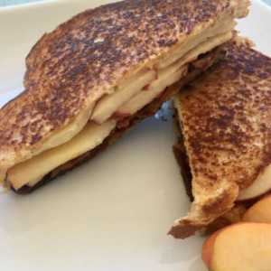

Bacon & Apple Grilled Cheese

Description:
A tantalizing fusion of crispy bacon, sweet apple slices, and gooey melted cheese nestled between two slices of perfectly grilled bread.
This savory-sweet delight offers a symphony of flavors and textures that elevate the classic grilled cheese
sandwich to a whole new level of deliciousness.
Ingredients:
- 4 slices whole grain bread
- 1 tbsp mayonnaise, divided
- 2 slices cheddar cheese
- 6 to 8 slices low-sodium bacon
- 1 small pink lady or Fuji apple, thinly sliced
- 2 slices provolone cheese
- 1 tbsp Dijon mustard, divided
- 4 tbsp unsalted butter, divided
Steps:
- Cook the bacon according to package instructions, until browned and crisp. Wash hands with soap and water after handling raw bacon.
- While the bacon cooks, spread the mayonnaise on two slices of bread.
Top each with a slice of cheddar cheese.
-
Once the bacon is cooked, top the sandwiches with half the bacon,
a couple of slices of apple, and one slice of provolone each.
-
Spread half the Dijon mustard on the remaining two slices of bread.
Set the slices of bread on the sandwiches with the Dijon mustard side down.
-
In a large skillet over medium heat, add 2 Tablespoons of butter.
Once the butter melts, set the two sandwiches in the pan.
Cook until golden brown on both sides and the cheese is melted,
using the remaining butter when flipping the sandwiches.